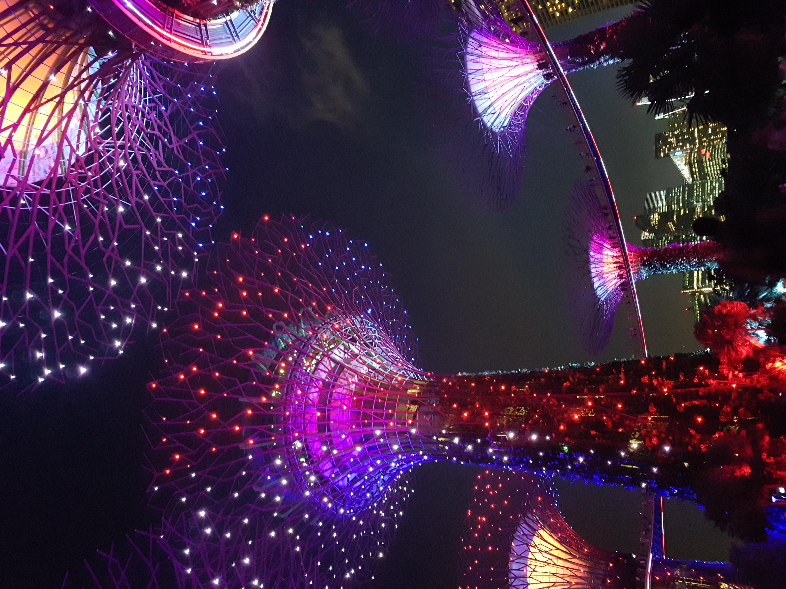
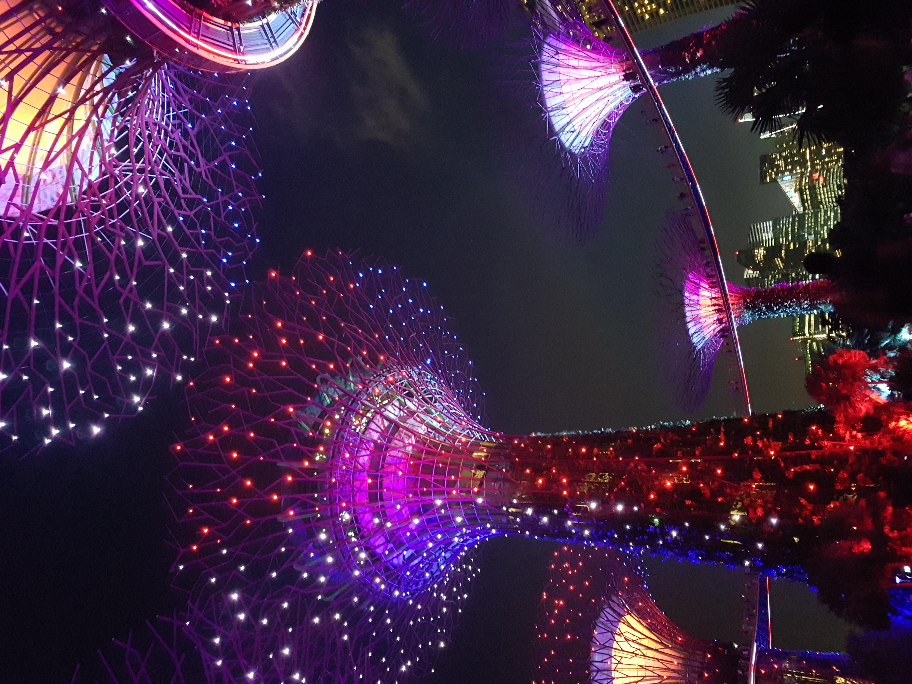

안녕하세요, 올해 20살인 새솜 김시은입니다.
저는 요즘 제 관심사인 '여행'과 이로부터 얻은 깨달음에 대해 이야기해보려 합니다.
코로나로 인해 여행을 갈 수 없기에, 4년전 싱가포르에 다녀왔던 이야기를 풀어나가려 합니다.
저에게 생각의 나래를 펼쳐나가게 해주고, 기쁨을 준 장소 세 곳을 알려드리겠습니다.
첫번째로, '가든스바이더베이'입니다.
 


관광을 위해 자리를 잡았을 때 바닥의 온기가 몸으로 전달이 되어 편안하고 노곤해졌습니다.
색깔이 바뀌는 나무들을 보고 있는데, 익숙한 장단이 들렸습니다. '아리랑'이었습니다.
화려한 빛을 뿜는 큰 나무들에 둘러싸여 몸과 눈, 귀까지 힐링을 하던 중 우리나라 노래가 들려 정말 정겨웠습니다.
사람이 많이 모이는 관광명소라 시끄러울 법도 한데 제가 머물던 시간 동안에는 조용했습니다.
싫지 않은 소근거림과 아리랑 노래, 반짝이는 나무들을 보고 있으니 시간이 멈춘 것만 같고 전율이 느껴졌습니다.
저는 외국에 나가본 경험이 싱가포르 관광이 처음이자 마지막이기 때문에
다른 나라에서도 한국 노래를 들을 수 있는지는 모르겠지만
아무래도 다양한 인종이 함께 모여 사는 싱가포르이기에 가능했던 일이라고 생각했습니다.
이때 다른 나라에 와서 느끼는 묘한 긴장감과 경계심이 딱 풀렸고, 이웃 같은 느낌이 들었습니다.
두번째로, '유니버셜 스튜디오'입니다.


이곳은 제 기준으로 최고의 놀이공원이었습니다.
우리나라 놀이공원보다 더 격렬한 놀이기구와 스릴 넘치는 4D기구를 탈 수 있었기 때문입니다.
격한 놀이기구를 안 좋아하시는 분들에게는 고역이겠지만요...
사진은 없지만 이곳에는 정말 큰 피자를 팔고 있습니다. S~M 사이즈 정도 돗자리 크기로 기억합니다.
피자를 사랑하는 저에게는 지상낙원처럼 느껴졌습니다.
두번째 사진처럼 캐릭터탈을 쓴 직원분들이 정말 많이 돌아다니십니다.
여러가지 캐릭터들을 만나볼 수 있어서 좋아하는 캐릭터가 있는 분들이 정말 좋아할 것 같습니다.
세번째로, '마리나베이샌즈'입니다.


싱가포르에서 가장 유명한 관광명소입니다.
이곳 풍경을 야경으로 가장 먼저 접했습니다. 보자마자 감격스러운 감정이 느껴졌습니다.
너무 아름다웠고 정말 높게 올려진 은행 건물들이 저를 압도하는 것 같기도 했습니다.
낮에 다시 본 마리나베이샌즈 풍경은 또다른 느낌을 주었습니다.
제 세상이라고는 중학교와 집근처 혹은 놀러나가는 곳 정도였는데
옆에서 누군가가 제 앞의 동굴벽을 허물어서 세상은 이렇게나 크다고 말하는 것 같았습니다.
건물 모형들을 보면서 작은 땅에도 이렇게나 멋있는 것들이 많구나, 내 세상은 정말 작았구나 라고 생각했습니다.
세 개 장소에 대한 설명 및 감정은 이 정도로 하겠습니다.
급한 마무리 같지만, 제 깨달음을 위해 마무리 짓습니다. 어서 넘어와주세요! 이곳 으로